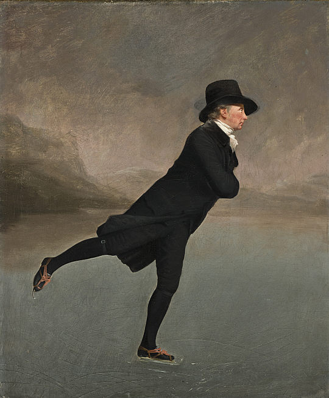
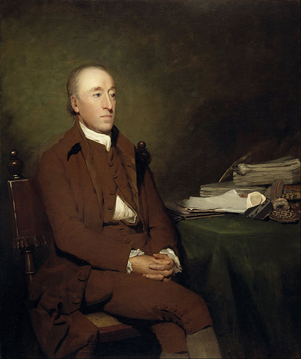

Marauders Demo
The Reverend Robert Walker Skating on Duddingston Loch is an oil painting by Sir Henry Raeburn in the National Gallery of Scotland in Edinburgh. It was practically unknown until about 1949; today, however, it is one of Scotland's best known paintings. It is considered an icon of Scottish culture, painted during one of the most remarkable periods in the country's history, the Scottish Enlightenment.
James Hutton (1726-1797) was a Scottish geologist, physician, chemical manufacturer and naturalist. He is credited as being the originator of uniformitarianism—one of the fundamental principles of geology—which explains the features of the Earth’s crust by means of natural processes over geologic time. Hutton is often referred to as the "Father of Modern Geology".
